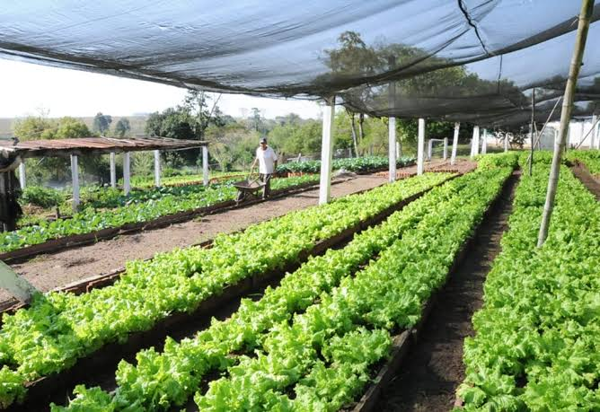

A horta comunitária é um espaço onde os cooperados cultivam verduras e legumes de forma coletiva, dividindo o trabalho e a colheita.
Quem planta sabe esperar, e quem espera sabe colher.
Para aprender mais sobre agricultura sustentável, visite o site da Embrapa
Ficha produzida para a aula de programação web.